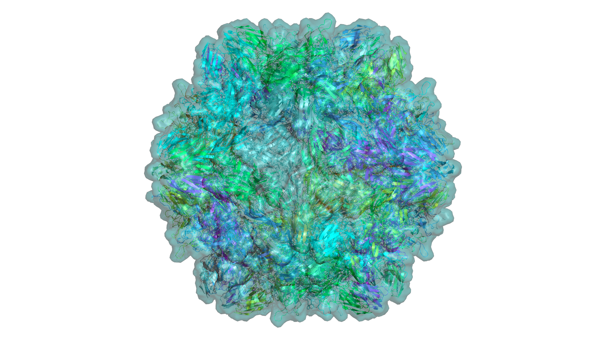
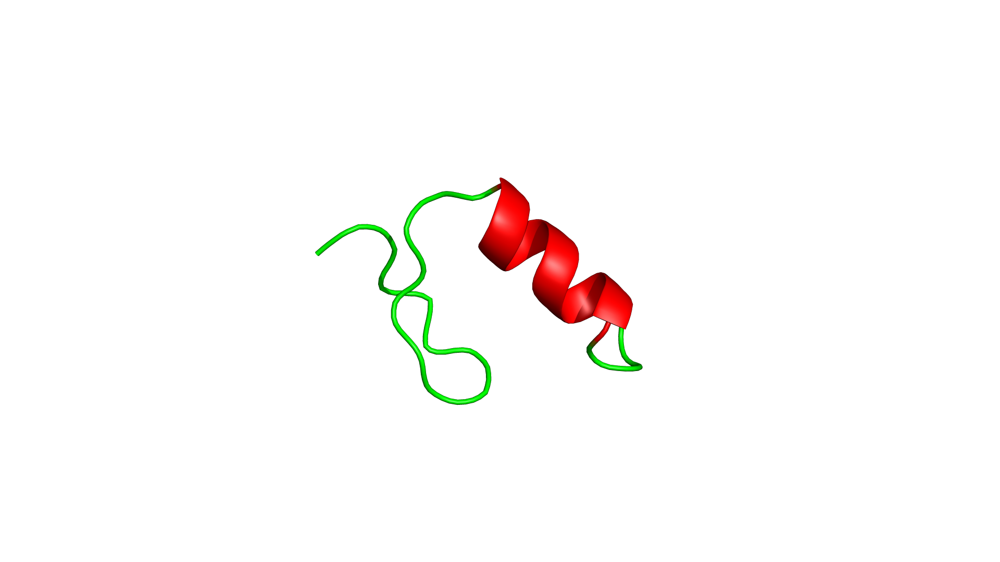
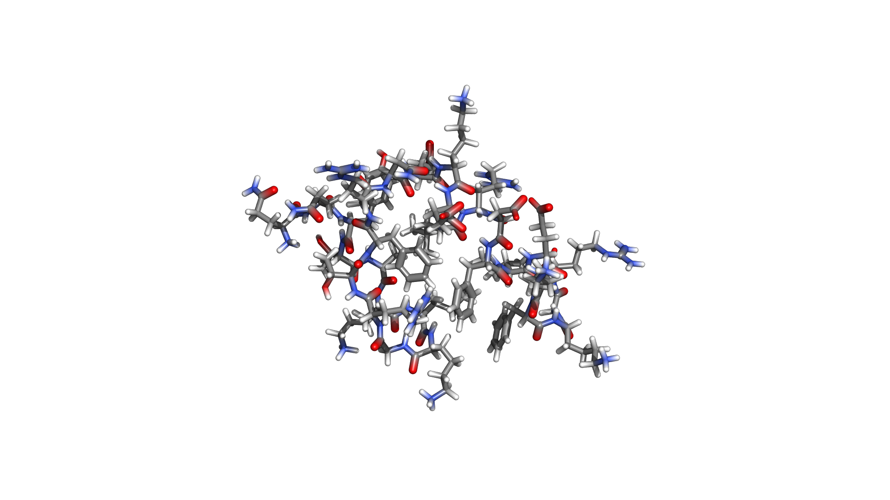
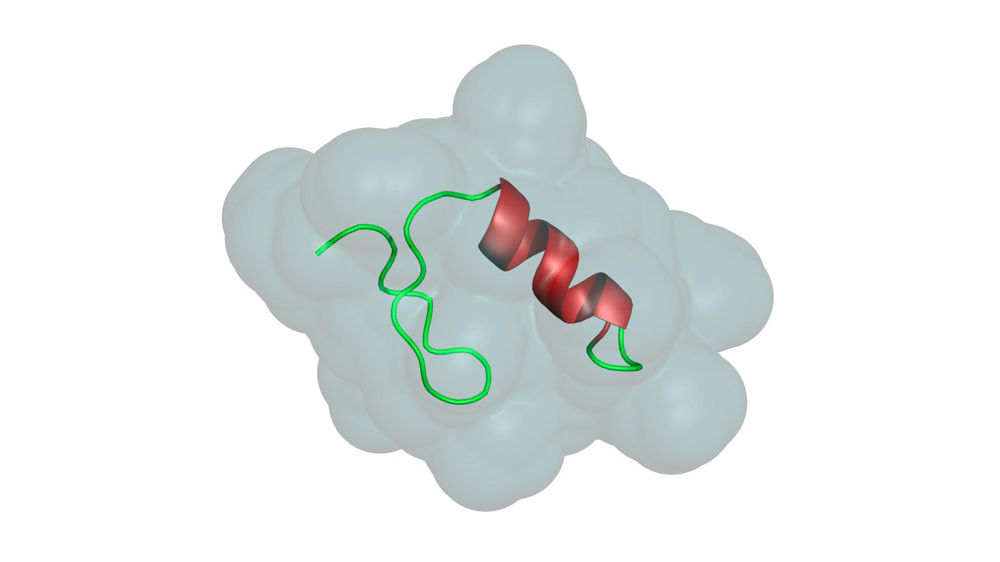
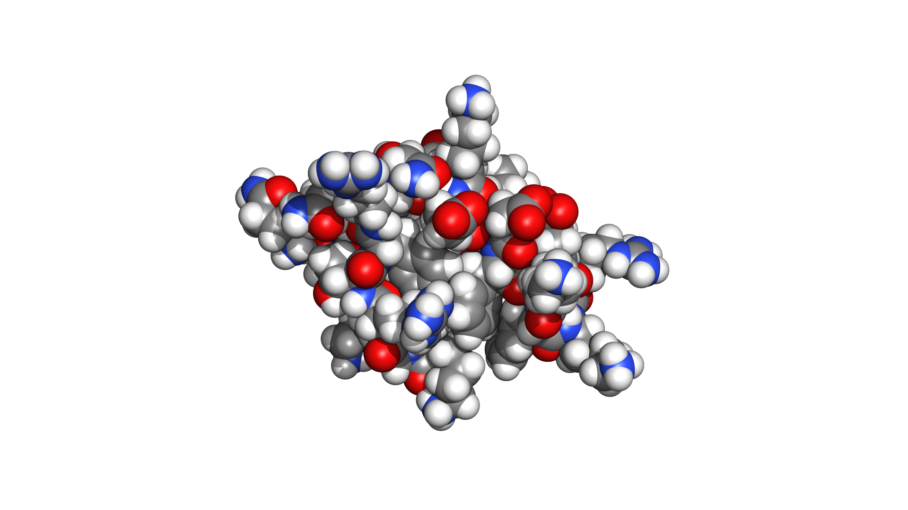
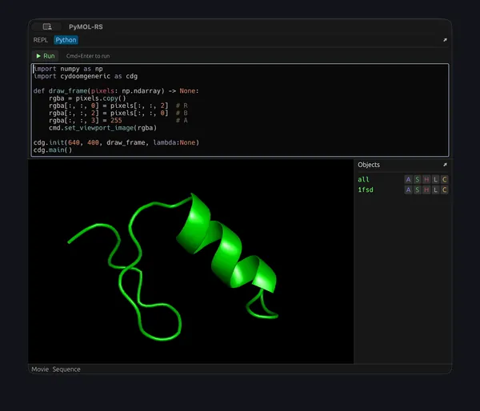

A complete Rust reimplementation of PyMOL. GPU-accelerated via WebGPU. Memory-safe. Same commands you already know — entirely new engine underneath.

Every representation is GPU-accelerated with custom shaders. No legacy OpenGL — pure WebGPU pipeline.




Not a wrapper. Not a port. A ground-up reimplementation in a language designed for performance and safety.
cmd.* interface, custom
commands via cmd.extend(), script
execution. Drop-in compatibility for existing
workflows.
cargo build. egui-based GUI that looks
native everywhere.
# Load a structure from PDB PyMOL-RS> fetch 1alk # Show cartoon and color by chain PyMOL-RS> show cartoon PyMOL-RS> color chain # Add transparent surface PyMOL-RS> show surface PyMOL-RS> set transparency, 0.7 # Select active site residues PyMOL-RS> select site, byres near_to 5 of resn ZN PyMOL-RS> show sticks, site PyMOL-RS> set stick_color, atomic, site # Save the session PyMOL-RS> save my_session.prs
If you know PyMOL, you know PyMOL-RS. The same command syntax, the same selection algebra, the same muscle memory. We reimplemented the language, not just the renderer.
Invent your own commands. Change interface. Read and write any file format. Automate entire workflows — or just play at work.

A unique lighting preset inspired by structural bioinformatics aesthetics. Multi-directional soft illumination that brings out secondary structure detail.
Every component is an independent crate. Use the selection parser in your pipeline, the renderer in your app, or the full GUI.
PyMOL-RS is free, open-source, and ready for your structures.
By the way — you're already using it. Scroll back up to the Skripkin example and try to rotate or zoom. That's not an image, it's the web version of PyMOL-RS running live in your browser.